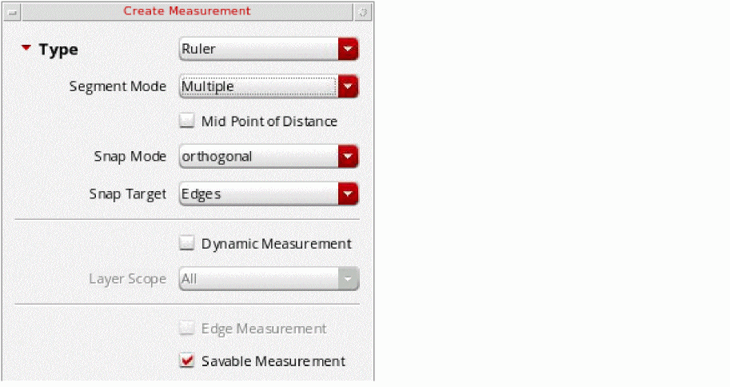
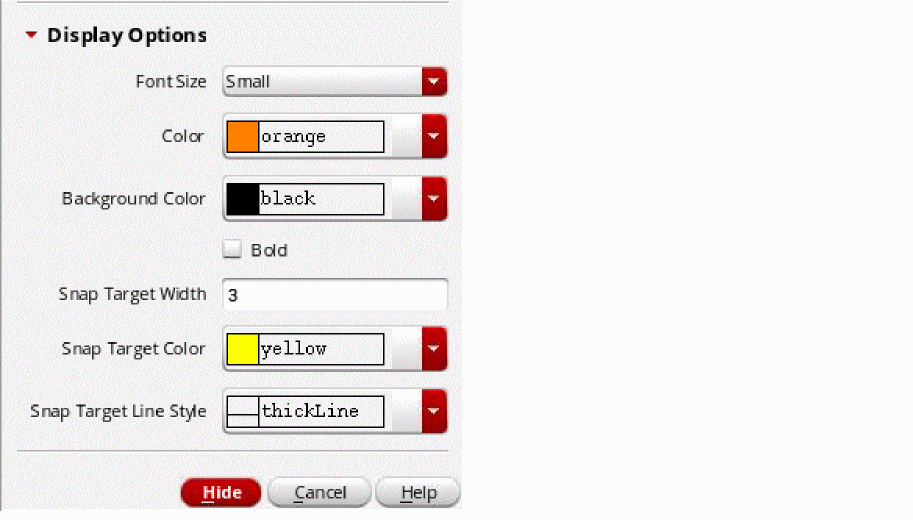

Creating Rulers with Snapping On
To create a ruler when snapping is on:
- If required, in the Display Options form in the layout window, adjust the display level for displaying targets within the hierarchy.
- Choose Tools – Create Measurement.
-
Press
F3or select Options from the ruler shortcut menu.
The Create Measurement form appears. -
Specify the ruler settings. For example:
- From Segment Mode, select the ruler mode as single, multiple, or auto.
- From Snap Mode, select how the ruler snaps to the grid: anyAngle, diagonal, orthogonal, horizontal, or vertical.
- From Snap Target, select whether the ruler snaps to edges, points, or both.
-
Select the Savable Measurement check box if you want to create a persistent ruler. By default, rulers are saved when you save the cellview. Clear the selection if you do not want to save rulers.
- In the Display Options section, specify the ruler and snap target display settings.
-
Click Hide.
-
Move the mouse pointer on the canvas.
As you move the pointer, a vertex, nexus, edge midpoint, edge, or centerline highlights dynamically based on the snapping option you have selected. -
Click near one of the highlighted targets.
The pointer snaps to the highlighted target. -
Press the spacebar if there are multiple potential targets within the distance from the pointer.
The highlight cycles over the targets. With each spacebar key press, the next possible target within the distance from the pointer is highlighted. You can highlight up to five targets in the proximity of the pointer by pressing the spacebar in succession. -
Click to snap the pointer to the highlighted target.
- If the target is an edge or a center line, the pointer drops orthogonally from the point of click to the target edge or center line, respectively.
- In case of points, the pointer snaps to the target vertex, nexus, or edge midpoint. If the selected snapping option is Mid Point of Distance, click twice for the pointer to snap to the starting point of the smart ruler.
- If you select Mid Point of Distance on the ruler shortcut menu, by default, the Snap Target to Edges option appears selected on the shortcut menu.
Then, click to snap the pointer to that edge. After you define the two targets, the pointer immediately snaps to the midpoint of the distance between the two targets on the selected edges. -
Press
Escto finish creating rulers.
You can clear all rulers from the design window by choosing Tools – Clear All Measurements. This deletes all persistent and transient rulers.
Related Topics
Creating Rulers with Smart Snapping Off
Return to top